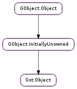

| static | check_uniqueness(list, name) |
| static | default_deep_notify(object, orig, pspec, excluded_props) |
| static | replace(oldobj, newobj) |
| add_control_binding(binding) | |
| get_control_binding(property_name) | |
| get_control_rate() | |
| get_g_value_array(property_name, timestamp, interval, n_values, values) | |
| get_name() | |
| get_parent() | |
| get_path_string() | |
| get_value(property_name, timestamp) | |
| get_value_array(property_name, timestamp, interval, n_values, values) | |
| has_active_control_bindings() | |
| has_ancestor(ancestor) | |
| ref() | |
| remove_control_binding(binding) | |
| set_control_binding_disabled(property_name, disabled) | |
| set_control_bindings_disabled(disabled) | |
| set_control_rate(control_rate) | |
| set_name(name) | |
| set_parent(parent) | |
| suggest_next_sync() | |
| sync_values(timestamp) | |
| unparent() | |
| unref() |
| Name | Type | Flags | Description |
|---|---|---|---|
| name | str | r/w | The name of the object |
| parent | Gst.Object | r/w | The parent of the object |
| Name | Parameters | Return | Description |
|---|---|---|---|
| deep-notify | Gst.Object, GObject.ParamSpec | The deep notify signal is used to be notified of property changes. It is typically attached to the toplevel bin to receive notifications from all the elements contained in that bin. |
| Name | Type | Access |
|---|---|---|
| flags | int | r |
| name | str | r |
| object | GObject.InitiallyUnowned | r |
| parent | Gst.Object | r |
Bases: GObject.InitiallyUnowned
Gst.Object provides a root for the object hierarchy tree filed in by the GStreamer library. It is currently a thin wrapper on top of GObject.InitiallyUnowned. It is an abstract class that is not very usable on its own.
Gst.Object gives us basic refcounting, parenting functionality and locking. Most of the function are just extended for special GStreamer needs and can be found under the same name in the base class of Gst.Object which is GObject.Object (e.g. GObject.Object.ref () becomes Gst.Object.ref ()).
Since Gst.Object dereives from GObject.InitiallyUnowned, it also inherits the floating reference. Be aware that functions such as Gst.Bin.add () and Gst.Element.add_pad () take ownership of the floating reference.
In contrast to GObject.Object instances, Gst.Object adds a name property. The functions Gst.Object.set_name () and Gst.Object.get_name () are used to set/get the name of the object.
controlled properties
Controlled properties offers a lightweight way to adjust gobject properties over stream-time. It works by using time-stamped value pairs that are queued for element-properties. At run-time the elements continuously pull values changes for the current stream-time.
What needs to be changed in a Gst.Element ? Very little - it is just two steps to make a plugin controllable!
mark gobject-properties paramspecs that make sense to be controlled, by Gst.PARAM_CONTROLLABLE.
when processing data (get, chain, loop function) at the beginning call Gst.Object.sync_values (element,timestamp). This will made the controller to update all gobject properties that are under control with the current values based on timestamp.
What needs to be done in applications? Again it’s not a lot to change.
create a Gst.ControlSource. csource = gst_interpolation_control_source_new (); GObject.Object.set (csource, “mode”, GST_INTERPOLATION_MODE_LINEAR, None );
Attach the Gst.ControlSource on the controller to a property. Gst.Object.add_control_binding (object, gst_direct_control_binding_new (object, “prop1”, csource));
Set the control values gst_timed_value_control_source_set ((GstTimedValueControlSource *)csource,0 * Gst.SECOND, value1); gst_timed_value_control_source_set ((GstTimedValueControlSource *)csource,1 * Gst.SECOND, value2);
start your pipeline
Last reviewed on 2012-03-29 (0.11.3)
| Parameters: |
|
|---|---|
| Returns: | True if a Gst.Object named name does not appear in list, False if it does. MT safe. Grabs and releases the LOCK of each object in the list. |
| Return type: |
Checks to see if there is any object named name in list. This function does not do any locking of any kind. You might want to protect the provided list with the lock of the owner of the list. This function will lock each Gst.Object in the list to compare the name, so be carefull when passing a list with a locked object.
| Parameters: |
|
|---|
A default deep_notify signal callback for an object. The user data should contain a pointer to an array of strings that should be excluded from the notify. The default handler will print the new value of the property using GLib.print_.
MT safe. This function grabs and releases object ‘s LOCK for getting its path string.
| Parameters: |
|
|---|---|
| Returns: | True if newobj was different from oldobj |
| Return type: | bool, oldobj: Gst.Object |
Atomically modifies a pointer to point to a new object. The reference count of oldobj is decreased and the reference count of newobj is increased.
Either newobj and the value pointed to by oldobj may be None.
| Parameters: | binding (Gst.ControlBinding) – the Gst.ControlBinding that should be used |
|---|---|
| Returns: | False if the given binding has not been setup for this object or has been setup for a non suitable property, True otherwise. |
| Return type: | bool |
Attach the Gst.ControlBinding to the object. If there already was a Gst.ControlBinding for this property it will be replaced.
The object will take ownership of the binding.
| Parameters: | property_name (str) – name of the property |
|---|---|
| Returns: | the Gst.ControlBinding for property_name or None if the property is not controlled. |
| Return type: | Gst.ControlBinding |
Gets the corresponding Gst.ControlBinding for the property. This should be unreferenced again after use.
| Returns: | the control rate in nanoseconds |
|---|---|
| Return type: | int |
Obtain the control-rate for this object. Audio processing Gst.Element objects will use this rate to sub-divide their processing loop and call Gst.Object.sync_values () inbetween. The length of the processing segment should be up to control-rate nanoseconds.
If the object is not under property control, this will return Gst.CLOCK_TIME_NONE. This allows the element to avoid the sub-dividing.
The control-rate is not expected to change if the element is in Gst.State.PAUSED or Gst.State.PLAYING.
| Parameters: |
|
|---|---|
| Returns: | |
| Return type: |
Gets a number of GObject.Values for the given controlled property starting at the requested time. The array values need to hold enough space for n_values of GObject.Value.
This function is useful if one wants to e.g. draw a graph of the control curve or apply a control curve sample by sample.
| Returns: | the name of object. GLib.free () after usage. MT safe. This function grabs and releases object ‘s LOCK. |
|---|---|
| Return type: | str |
Returns a copy of the name of object. Caller should GLib.free () the return value after usage. For a nameless object, this returns None, which you can safely GLib.free () as well.
Free-function: GLib.free
| Returns: | parent of object, this can be None if object has no parent. unref after usage. MT safe. Grabs and releases object ‘s LOCK. |
|---|---|
| Return type: | Gst.Object |
Returns the parent of object. This function increases the refcount of the parent object so you should Gst.Object.unref () it after usage.
| Returns: | a string describing the path of object. You must GLib.free () the string after usage. MT safe. Grabs and releases the Gst.Object ‘s LOCK for all objects in the hierarchy. |
|---|---|
| Return type: | str |
Generates a string describing the path of object in the object hierarchy. Only useful (or used) for debugging.
Free-function: GLib.free
| Parameters: | |
|---|---|
| Returns: | the GObject.Value of the property at the given time, or None if the property isn’t controlled. |
| Return type: |
Gets the value for the given controlled property at the requested time.
| Parameters: | |
|---|---|
| Returns: | |
| Return type: |
Gets a number of values for the given controlled property starting at the requested time. The array values need to hold enough space for n_values of the same type as the objects property’s type.
This function is useful if one wants to e.g. draw a graph of the control curve or apply a control curve sample by sample.
The values are unboxed and ready to be used. The similar function Gst.Object.get_g_value_array () returns the array as GObject.Values and is better suites for bindings.
| Returns: | True if the object has active controlled properties |
|---|---|
| Return type: | bool |
Check if the object has an active controlled properties.
| Parameters: | ancestor (Gst.Object) – a Gst.Object to check as ancestor |
|---|---|
| Returns: | True if ancestor is an ancestor of object. MT safe. Grabs and releases object ‘s locks. |
| Return type: | bool |
Check if object has an ancestor ancestor somewhere up in the hierarchy. One can e.g. check if a Gst.Element is inside a Gst.Pipeline.
| Returns: | A pointer to object |
|---|---|
| Return type: | Gst.Object |
Increments the reference count on object. This function does not take the lock on object because it relies on atomic refcounting.
This object returns the input parameter to ease writing constructs like : result = Gst.Object.ref (object->parent);
| Parameters: | binding (Gst.ControlBinding) – the binding |
|---|---|
| Returns: | True if the binding could be removed. |
| Return type: | bool |
Removes the corresponding Gst.ControlBinding. If it was the last ref of the binding, it will be disposed.
| Parameters: |
|---|
This function is used to disable the #GstController on a property for some time, i.e. gst_controller_sync_values() will do nothing for the property.
| Parameters: | disabled (bool) – boolean that specifies whether to disable the controller or not. |
|---|
This function is used to disable all controlled properties of the object for some time, i.e. Gst.Object.sync_values () will do nothing.
| Parameters: | control_rate (int) – the new control-rate in nanoseconds. |
|---|
Change the control-rate for this object. Audio processing Gst.Element objects will use this rate to sub-divide their processing loop and call Gst.Object.sync_values () inbetween. The length of the processing segment should be up to control-rate nanoseconds.
The control-rate should not change if the element is in Gst.State.PAUSED or Gst.State.PLAYING.
| Parameters: | name (str) – new name of object |
|---|---|
| Returns: | True if the name could be set. Since Objects that have a parent cannot be renamed, this function returns False in those cases. MT safe. This function grabs and releases object ‘s LOCK. |
| Return type: | bool |
Sets the name of object, or gives object a guaranteed unique name (if name is None ). This function makes a copy of the provided name, so the caller retains ownership of the name it sent.
| Parameters: | parent (Gst.Object) – new parent of object |
|---|---|
| Returns: | True if parent could be set or False when object already had a parent or object and parent are the same. MT safe. Grabs and releases object ‘s LOCK. |
| Return type: | bool |
Sets the parent of object to parent. The object’s reference count will be incremented, and any floating reference will be removed (see Gst.Object.ref_sink ()).
| Returns: | Returns the suggested timestamp or Gst.CLOCK_TIME_NONE if no control-rate was set. |
|---|---|
| Return type: | int |
Returns a suggestion for timestamps where buffers should be split to get best controller results.
| Parameters: | timestamp (int) – the time that should be processed |
|---|---|
| Returns: | True if the controller values could be applied to the object properties, False otherwise |
| Return type: | bool |
Sets the properties of the object, according to the Gst.ControlSources that (maybe) handle them and for the given timestamp.
If this function fails, it is most likely the application developers fault. Most probably the control sources are not setup correctly.
Clear the parent of object, removing the associated reference. This function decreases the refcount of object.
MT safe. Grabs and releases object ‘s lock.
Decrements the reference count on object. If reference count hits zero, destroy object. This function does not take the lock on object as it relies on atomic refcounting.
The unref method should never be called with the LOCK held since this might deadlock the dispose function.